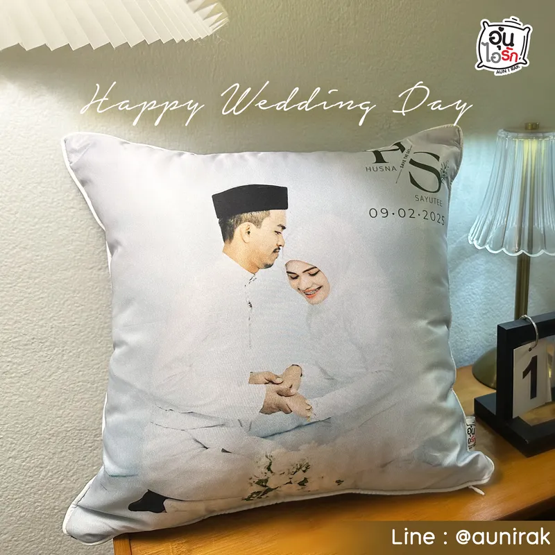
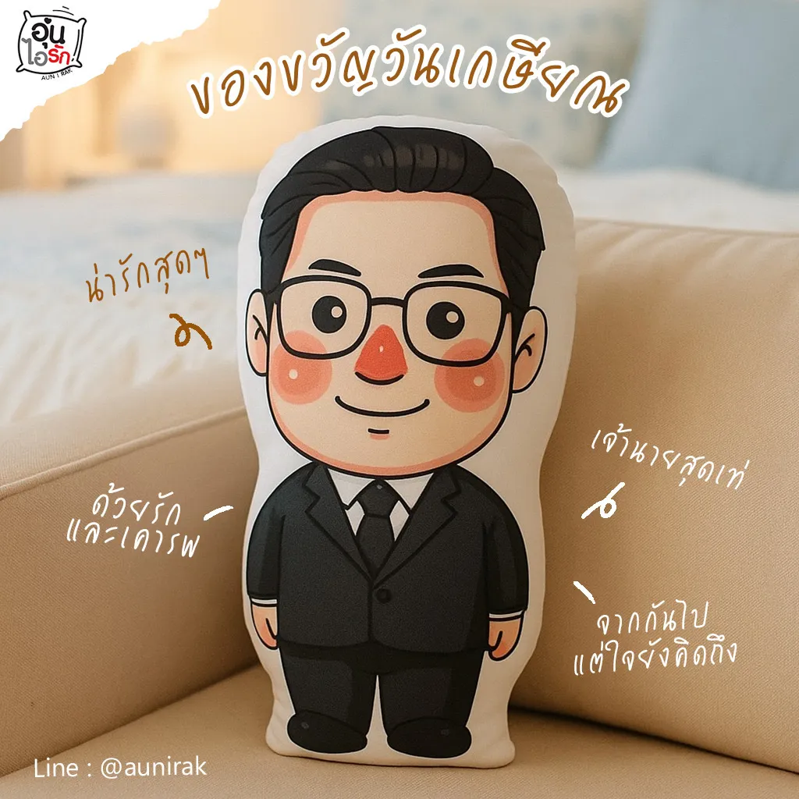
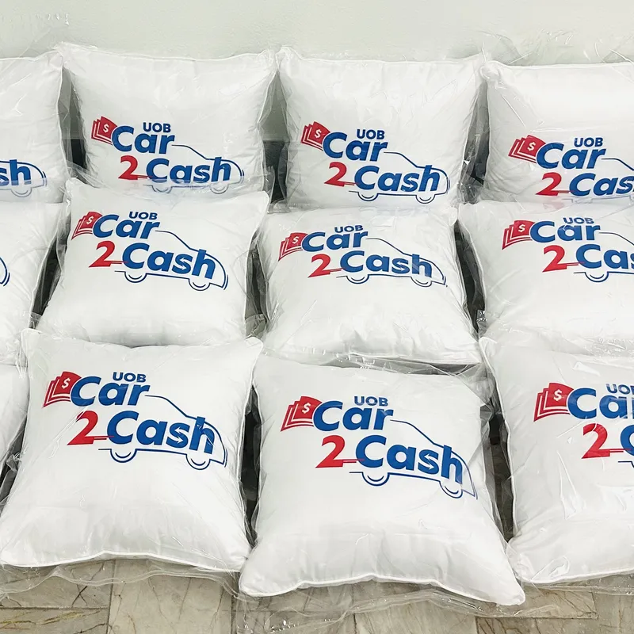
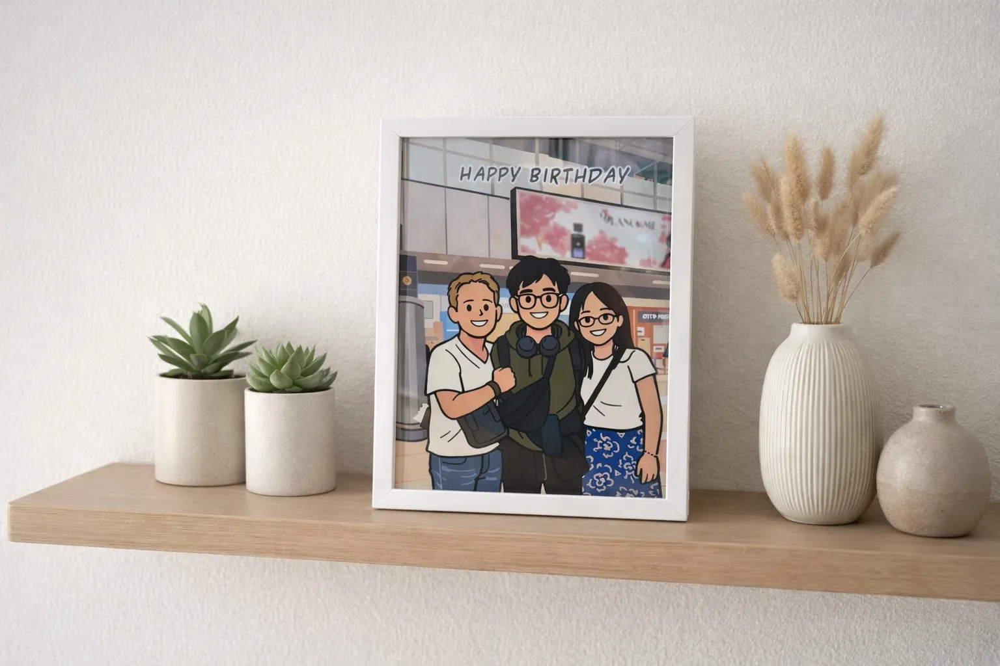

ของขวัญปีใหม่ 2027: 6 ไอเดียให้ผู้ใหญ่ เจ้านาย และจับฉลาก พร้อมคำอวยพรปีใหม่ 15 แบบ
สิ้นปีทีไรลิสต์ของขวัญยาวเหยียด — ของขวัญปีใหม่ให้ผู้ใหญ่ที่เคารพ ให้เจ้านาย ให้ทีมงาน แถมงานจับฉลากอีก กระเช้าก็ให้มาทุกปีจนเจ้าตัวจำไม่ได้แล้วว่าใครให้ ปีนี้ลองเปลี่ยนเป็นของสั่งทำที่มีรูป ชื่อ หรือโลโก้ของผู้รับดูครับ งบเท่าเดิมแต่คนรับจำไปทั้งปี บทความนี้แยกไอเดียตามคนรับและงบให้ครบ พร้อมคำอวยพรเขียนการ์ดค่ะ
1. ของจับฉลากปีใหม่ งบ 300–500 — จับได้แล้วว้าวทั้งวง

กติกาจับฉลากส่วนใหญ่อยู่ที่งบ 300–500 บาท ซึ่งเป็นช่วงราคาที่ของสั่งทำของเราพอดีเป๊ะ: หมอนไดคัทเริ่ม 333 บาท หมอนอิงสกรีนรูป 399 บาท หรือแก้วมัคสกรีน 200 บาทจับคู่กับขนมอีกนิดก็ถึงงบ เคล็ดลับคือสกรีนรูปทีมหรือมุกภายในออฟฟิศลงไป — ของชิ้นเดียวที่ทั้งวงแย่งกันครับ
2. ให้พ่อแม่และผู้ใหญ่ที่เคารพ — ผ้าห่มผืนอุ่นที่มีรูปลูกหลาน

ปีใหม่อากาศกำลังเย็น ผ้าห่มสกรีนรูปครอบครัวหรือรูปหลาน ๆ เต็มผืนคือของขวัญที่ผู้ใหญ่รับแล้วยิ้มไม่หุบ ผ้านาโนสเปนเด็กซ์นุ่ม ซักเครื่องได้ มาพร้อมกล่องของขวัญและการ์ดพร้อมมอบ ขนาดใหญ่ XL 140×170 ซม. 1,590 บาท (เริ่มต้น 690 บาท) — แทนกระเช้าได้สบายและอยู่กับท่านไปอีกหลายปี
3. ให้เจ้านาย หัวหน้า — แก้วเก็บอุณหภูมิสกรีนชื่อ

ของให้เจ้านายต้องดูดีแต่ไม่เว่อร์ — แก้วเก็บอุณหภูมิทรง Yeti (690 บาท ฟรีหลอดสแตนเลส) สกรีนภาพการ์ตูนของท่านพร้อมชื่อ ตั้งบนโต๊ะทำงานแล้วทั้งแผนกเห็น เราวาดภาพการ์ตูนจากรูปถ่ายให้ฟรี รวมเงินกันทั้งทีมคนละไม่กี่สิบบาทก็ได้ของที่ท่านใช้ทุกวันครับ
4. ให้แฟนและเพื่อนสนิท — หมอนไดคัทหน้าเขา

ปีใหม่กับคนสนิทต้องของที่ขำและซึ้งในชิ้นเดียว — หมอนไดคัทหน้าแฟน หน้าเพื่อน หรือหน้าน้องหมาน้องแมวของเขา เริ่ม 333 บาท ส่งรูปจากมือถือรูปเดียวเราจัดการให้หมด ตัดพื้นหลัง เย็บตามทรง ยัดใยนุ่มเต็มใบ เป็นของขวัญที่เปิดกล่องแล้วได้เสียงหัวเราะก่อนคำขอบคุณเสมอครับ
5. ให้ลูกค้าและทีมงาน — ของพรีเมียมโลโก้บริษัท

ฝั่งธุรกิจ ปีใหม่คือฤดูแจกของขวัญลูกค้า — หมอนสกรีนโลโก้คือของพรีเมียมที่ไม่จบในลิ้นชักเหมือนปากกาหรือสมุด เพราะไปอยู่บนโซฟาบ้านลูกค้าให้เห็นโลโก้ทุกวัน สั่งจำนวนมากมีราคาส่ง ออกใบกำกับภาษีได้ แจ้งจำนวนและวันงานมารับใบเสนอราคาฟรี (เรามีผลงานให้ทั้งธนาคารและแบรนด์ดังมาแล้ว ดูได้ในหน้าหมอนสกรีนโลโก้)
6. ของตั้งโชว์รับปีใหม่ — กรอบรูปภาพวาดการ์ตูน

เริ่มปีใหม่ด้วยรูปใหม่ — เอารูปครอบครัว รูปทีม หรือรูปคู่ มาให้เราวาดเป็นภาพการ์ตูนใส่กรอบพร้อมข้อความต้อนรับปี 2027 ตั้งบนโต๊ะทำงานหรือหิ้งบ้านได้ทั้งปี เป็นของขวัญที่ยิ่งเวลาผ่านยิ่งมีค่า ส่งรูปมาประเมินราคาฟรีทางไลน์ค่ะ
คำอวยพรปีใหม่ 15 แบบ — เขียนการ์ดหรือสกรีนลงของขวัญ
- สวัสดีปีใหม่ 2027 ขอให้สุขภาพแข็งแรง ร่ำรวยยิ่ง ๆ ขึ้นไป
- ขอให้ปีใหม่นี้มีแต่สิ่งดี ๆ เข้ามา เรื่องร้าย ๆ ผ่านพ้นไป
- Happy New Year! ขอให้ปังกว่าเดิมทุกด้านเลยนะ
- ขอบคุณที่ดูแลกันมาตลอดปี ปีหน้าขอให้เฮงยิ่งกว่าเดิม
- ขอให้คิดเงินได้เงิน คิดทองได้ทอง ตลอดปี 2027
- สวัสดีปีใหม่ครอบครัวที่รัก ขอให้อยู่กันพร้อมหน้าแบบนี้ทุกปี
- ปีใหม่นี้ขอให้งานราบรื่น เงินเดือนขึ้น โบนัสออก
- ขอให้สุขภาพแข็งแรงทั้งกายและใจ มีแรงทำตามฝันทั้งปี
- เริ่มต้นปีใหม่ด้วยรอยยิ้ม แล้วทั้งปีจะยิ้มได้ทุกวัน
- ขอบคุณสำหรับปีที่ผ่านมา และขอให้ปีหน้าดียิ่งกว่า
- สวัสดีปีใหม่เจ้านายที่เคารพ ขอให้กิจการรุ่งเรืองยิ่ง ๆ ขึ้นไป
- ปีเก่าให้ผ่านไป สิ่งดี ๆ ให้เข้ามา สวัสดีปีใหม่นะ
- ขอให้โชคดีตลอดปี มีความสุขตลอดไป
- ปีใหม่นี้ขอให้รักสมหวัง การงานสมปรารถนา
- 365 วันข้างหน้า ขอให้เป็น 365 วันที่ดีที่สุดของเธอ
สรุป — สั่งก่อน คิวไม่แน่น ได้ของทันปีใหม่
ช่วงกลางถึงปลายธันวาคมคิวผลิตแน่นทุกปี ใครมีลิสต์ในใจแล้วแนะนำทักจองคิวได้ตั้งแต่ตอนนี้ การผลิตใช้ 3–4 วันหลังยืนยันแบบ บวกจัดส่ง เผื่อเวลา 7–10 วันก่อนวันงานสบายใจสุด ร้านอุ่นไอรักออกแบบและผลิตเองทุกชิ้น ส่งแบบให้ดูก่อนผลิต แจ้งวันส่งชัดเจนตั้งแต่ยืนยันออเดอร์ค่ะ
จองคิวของขวัญปีใหม่ ส่งรูปมาทาง LINE เลย
ทำแบบให้ดูฟรี แจ้งราคาและวันส่งชัดเจนก่อนผลิตค่ะ
แอด LINE @aunirakคำถามที่พบบ่อยเรื่องของขวัญปีใหม่
ของขวัญปีใหม่ให้ผู้ใหญ่ควรให้อะไร
ของที่ดูตั้งใจและได้ใช้จริง เช่น ผ้าห่มสกรีนรูปครอบครัว แก้วเก็บอุณหภูมิสกรีนชื่อ หรือหมอนสกรีนรูปหลาน ผู้ใหญ่ได้ของที่มีรูปคนในครอบครัวมักประทับใจเป็นพิเศษค่ะ
ของจับฉลากงบ 300–500 เอาอะไรดี
หมอนไดคัทเริ่ม 333 บาท หมอนอิงสกรีนรูป 399 บาท หรือแก้วมัคสกรีน 200 บาทคู่กับขนม จับได้แล้วว้าวกว่าของสำเร็จรูปแน่นอนค่ะ
ควรสั่งล่วงหน้ากี่วัน
ช่วงธันวาคมคิวแน่น แนะนำ 7–10 วันก่อนวันงาน (ผลิต 3–4 วันหลังยืนยันแบบ บวกจัดส่ง) ทักไลน์จองคิวล่วงหน้าได้ค่ะ
อ่านต่อ / สินค้าที่เกี่ยวข้อง
บทความ: ของขวัญวันเกิด ไม่ซ้ำใคร
บทความ: ของขวัญวันเกษียณ + คำอวยพร 20 แบบ
บทความ: หมอนสกรีนโลโก้ ของพรีเมียมองค์กร
หมอนอิงสกรีนรูป เริ่ม 399.- · หมอนไดคัท เริ่ม 333.- · ผ้าห่มสกรีนรูป เริ่ม 690.- · แก้วสกรีน เริ่ม 200.- · กรอบรูปการ์ตูน